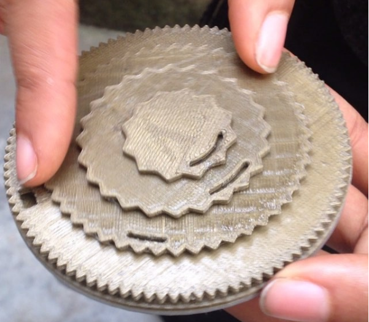

If, like me, you hated math in elementary school, you dread the multiplication table. For a while, I wondered why it is still being taught that way. My idea is to design a fun way of learning the table. I started working on the idea with a number of sketches and made this early model to test.
On testing this, I saw that using four holes to show the wide range of products in a multiplication table was quite complicated. Also, the holes were too small to see anything. One of the ideas I had then was also too use the same wheel for story telling, I quickly shelved this idea.
Focusing on the multiplication table now, I made newer sketches and tried out a simulation in SolidWorks. The video of the simulation is shown below: the idea is to turn the wheel around the hub. The position of the wheel on the hub tells the multiplication and the holes tell the multiplier and the product.
*Video is unavailable.
My next step is to make labels with the numbers on them, then test the wheel witl elementary school kids and teachers.
Tools: SolidWorks, Cura, 3D Printer.